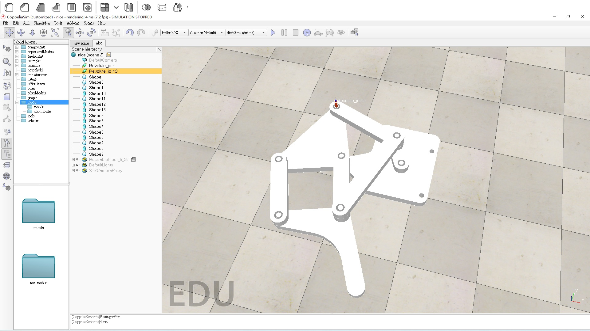

Final <<
Previous 40923103
final project
0103上課小考
零件圖


零件組合圖

模擬做動

hw1
onshape安裝配置

至 https://www.onshape.com/en/ 申請帳號後使用.
申請完後，登入

onshaoe操作流程

點選建立

點選文件

點選草圖

選橘色那塊平面

在剛橘色那塊平面上按右鍵，點選正視於草圖平面
之後就可以操作畫圖
onsahoe運動場景
NX12
西門子PLM軟體（Siemens PLM Software）是產品生命周期管理（PLM）軟體領域全球領先的供應商之
在操作的過程中，許多功能和solidworks相似，2D和3D使用的結合外也可以用來模擬CNC銑床加工過程
NX12安裝配置

先到kmol網站
點選實習內容
stage1
HW1_template
下載NX12 可攜版本下載

點選下載

仍要下載後壓縮至隨身碟裡
壓玩完後就完成
影片連結
NX12操作流程
NX12運動場景
W13
1.零件繪圖進度目前畫了33個，最頭疼的為齒輪零件組之後會使用SOLIDWORKS繪出